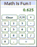
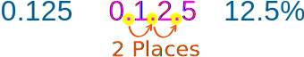

Convert Fractions to Percents
Divide the top of the fraction by the bottom, multiply by 100 and add a "%" sign.
The Simplest Method is to Use a Calculator
|  |
Steps:
|
Example: What is 5 8 as a percent?
Get your calculator and type in "5 ÷ 8 =", the calculator should show 0.625
Then multiply by 100 and your answer is: 62.5%
(Remember to put the "%" sign so people know it is "per 100")
OR you can multiply the top by 100 first then divide by the bottom number:
Example: What is 5 8 as a percent?
Multiply 5 by 100 first, then divide by 8
500 ÷ 8 = 62.5%
(Remember that "%" sign!)
Or Move the Decimal 2 Places
After dividing, instead of multiplying by 100 we can just move the decimal point 2 places to the right, then add the %
Example: Convert 1/8 to a percentage
Divide 1 by 8:
1 ÷ 8 = 0.125
Move the decimal point 2 places to the right

Remember to add the "%" sign: 12.5%
Another (Harder) Method
Percent means "per 100", so try to change the fraction to ? 100 form.Follow these steps:
| Step 1: Find a number you can multiply the bottom of the fraction by to get 100. |
| Step 2: Multiply both top and bottom of the fraction by that number. |
| Step 3. Then write down just the top number with the "%" sign. |
Example 1: Convert 3 4 to a Percent
Step 1: We can multiply 4 by 25 to become 100
(why 25? because 100 divided by 4 is 25)
Step 2: Multiply top and bottom by 25:
| ×25 | ||
| 3 4 | = | 75 100 |
| ×25 | ||
Step 3: Write down 75 with the percent sign:
Answer = 75%
Example 2: Convert 3 16 to a Percent
Step 1: We have to multiply 16 by 6.25 to become 100
(why 6.25? because 100 divided by 16 is 6.25)
Step 2: Multiply top and bottom by 6.25:
| ×6.25 | ||
| 3 16 | = | 18.75 100 |
| ×6.25 | ||
Step 3: Write down 18.75 with the percentage sign:
Answer = 18.75%
Yet Another Method: Proportions
Because a percent is actually a ratio (parts per 100) we can also use Proportions to do the conversion.
First, put what you know into this form:
Top of Fraction Bottom of Fraction = Percent 100
Then solve using "multiply across the known corners, divide by the third number":
Example: Convert 3 16 to percent
Fill in what you know:
3 16 = Percent 100
Multiply across the known corners, then divide by the third number. The "known corners" are top left and bottom right:
Percent = (3 × 100) / 16
= 300 / 16
= 18.75%
Answer: 3 16 is 18.75% (same answer as the previous example!)